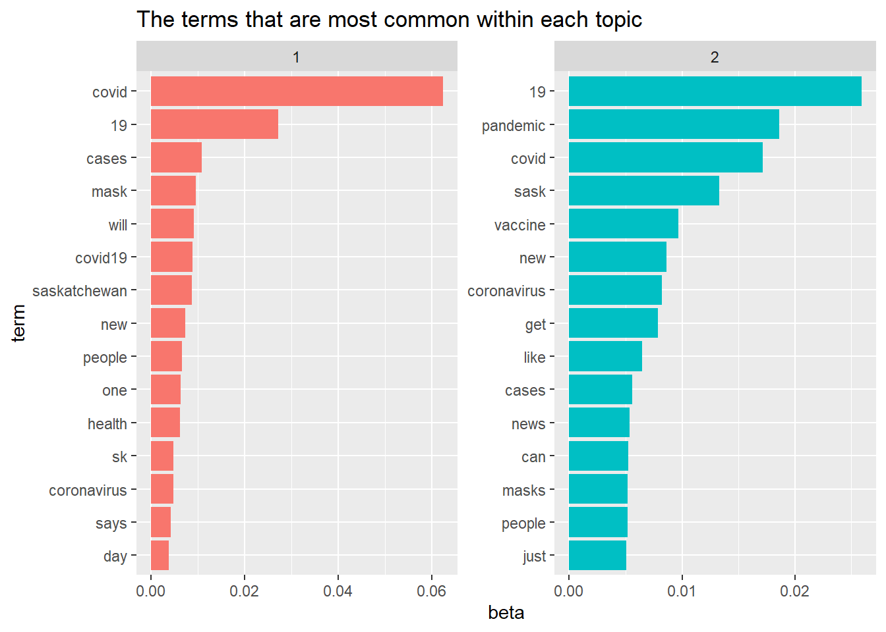
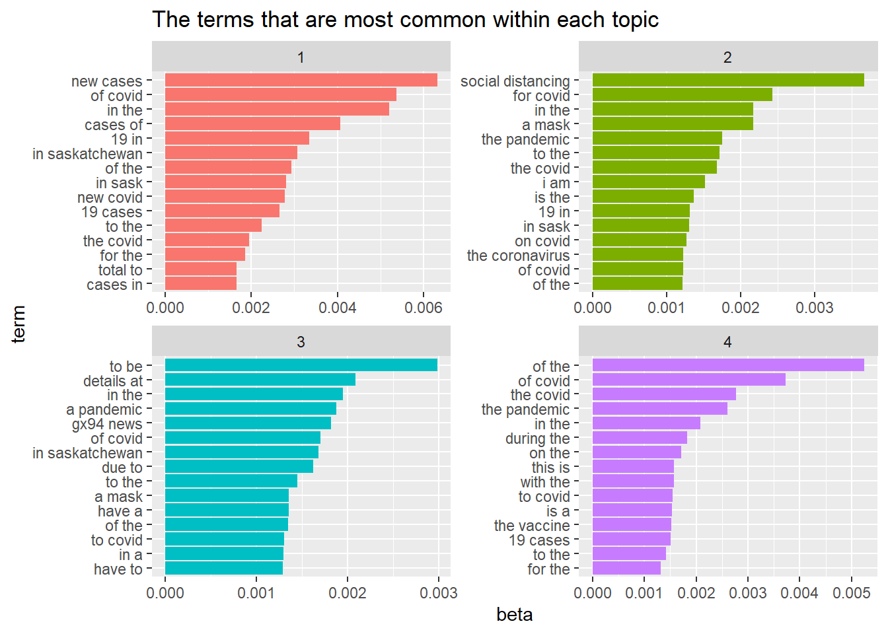
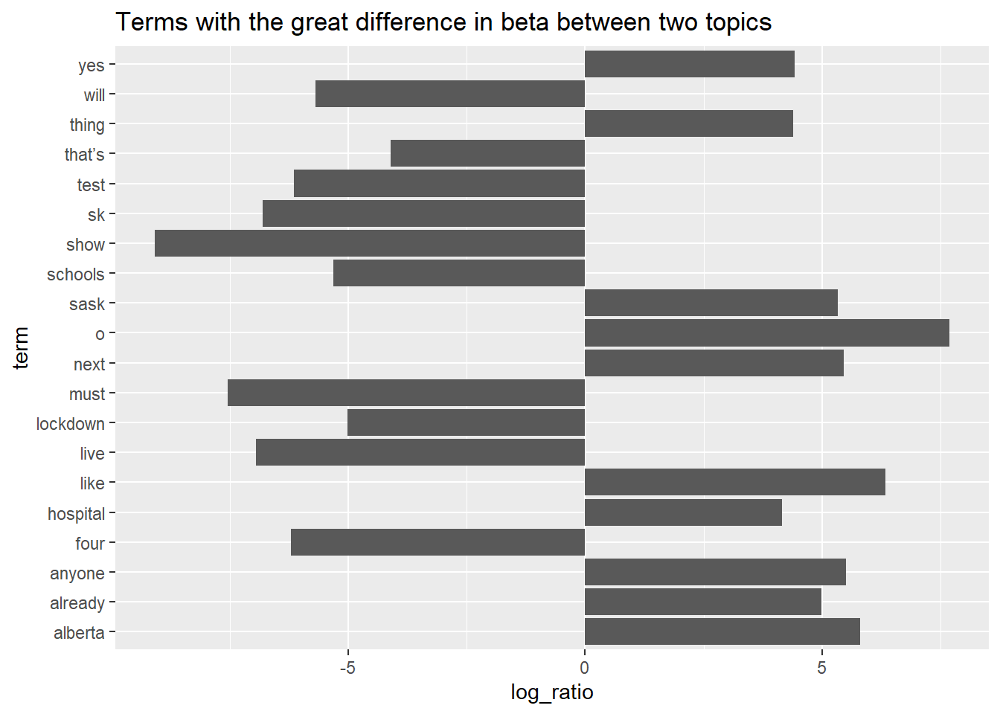

3 Text Analytics with R: Topic Modelling
This tutorial introduces text analyses in R using a variety of R packages and tidy tools.
3.1 Initial R Setup
3.1.1 Load the R Packages
Load and import the necessary R packages:
library(readr)
# a collection of package for data wrangling.
library(tidyverse)
# package for text processing
library(tidytext)
# collection of packages for modeling and L
library(tidymodels)
library(scales)
# R package for managing and analyzing textual data
library(quanteda)
# An R package with word stemming algorithm
# collapsing words to a common root to aid comparison of vocabular.
library(SnowballC)
# library for topic models (LDA)
library(topicmodels)
# text recipe
library(textrecipes)
# dealing with imbalance data using `step_downsample or upsample`.
library(themis)
# https://github.com/tidymodels/discrim
library(discrim)
# framework for constructing variable importance plots from ML models
library(vip)3.1.2 Load the Twitter Data for Topic Modelling
We start from data loading and text pre-processing.
urlfile_tm <-"https://raw.githubusercontent.com/tianyuan09/ai4ph2022/main/sampleTwitterDataForTopicModelling.csv"
tweetsTMDF <-read.csv(url(urlfile_tm), encoding = "UTF-8")
### UDF to remove the URLs from the tweets
removeURLs <- function(tweet) {
return(gsub("http\\S+", "", tweet))
}
### UDF to remove RT from the tweets
removeUsernamesWithRT <- function(tweet) {
return(gsub("^RT @[a-z,A-Z]*[0-9]*[a-z,A-Z]*[0-9]*: ","", tweet))
}
### UDF to remove the usernames or callouts from the tweets
removeUsernames <- function(tweet) {
return(gsub("@[a-z,A-Z]*[0-9]*[a-z,A-Z]*[0-9]*", "", tweet))
}
### remove the hashtag # from the tweets
removeHashtagSignOnly <- function(tweet) {
return(gsub("#", "", tweet))
}
# pre-processing using regex
tweetsTMDF$processed_tweet <- apply(tweetsTMDF['tweet'], 2,
removeURLs)
tweetsTMDF$processed_tweet <- apply(tweetsTMDF['processed_tweet'],2,
removeUsernamesWithRT)
tweetsTMDF$processed_tweet <- apply(tweetsTMDF['processed_tweet'],2,
removeUsernames)
tweetsTMDF$processed_tweet <- apply(tweetsTMDF['processed_tweet'],2,
removeHashtagSignOnly)
# pre-processing tokenization, stopword, stemming
text_tmdf <- tweetsTMDF %>% select(X,processed_tweet) %>%
unnest_tokens(word, processed_tweet)%>%
anti_join(stop_words[stop_words$lexicon == "snowball",], by = "word")%>%
mutate(stem = wordStem(word))
# we can tokenize text into consecutive sequences of words, called n-grams
text_bigrams<-tweetsTMDF %>% select(X,processed_tweet) %>%
unnest_tokens(bigram, processed_tweet, token="ngrams", n=2)%>%
filter(bigram != "covid 19")3.2 Topic Modelling
Topic modelling is an unsupervised machine learning approach that can scan a collection of documents, find word and phrase patterns within them, and automatically cluster word groupings and related expressions into topics.
What is topic modelling?
Topic modeling, including probabilistic latent semantic indexing and latent Dirichlet allocation, is a form of dimension reduction that uses a probabilistic model to find the co-occurrence patterns of terms that correspond to semantic topics in a collection of documents (Crain et al. 2012).
Topic models require a lot of subjective interpretation when it comes:
- the choice of K topics. There is no clear criteria for determining the number of topics K. When it comes to interpretability or coherence of topics, top words might help. You should always inspect topics manually, think carefully about theoretical concepts that you can measure with topics.
- the identification and exclusion of background topics
- the interpretation and labeling of topics identified as relevant
- the “assignment” of topics to documents
3.2.1 Latent Dirichlet allocation (LDA)
Latent Dirichlet allocation (LDA) is the one of the most common algorithms for topic modelling, and it is guided by two principles:
- Each document has a mixture of topics.
- Each topic is a mixture of words.
LDA estimate both of these at the same time and find the mixture of words that associated with each topic.
Create a document-term-matrix using the cast_dfm(). More information about tidy text format can be found at here (Silge and Robinson 2017)
# create a document term (or feature) matrix
word_counts_dtm = text_tmdf %>% count(X, word) %>%
cast_dfm(X, word, n)
word_counts_dtm
## Document-feature matrix of: 12,808 documents, 16,728 features (99.94% sparse) and 0 docvars.
## features
## docs agree also don’t everyone isolating masks one way wearing fort
## 18 1 1 1 1 1 1 1 2 1 0
## 30 0 0 0 0 0 0 0 0 0 1
## 31 0 0 0 0 0 0 0 0 0 0
## 38 0 0 0 0 0 0 0 0 0 0
## 47 0 0 0 0 0 0 0 0 0 0
## 57 0 0 0 0 0 1 0 0 1 0
## [ reached max_ndoc ... 12,802 more documents, reached max_nfeat ... 16,718 more features ]
# check the top features in our dataset
topfeatures(word_counts_dtm, n = 20, scheme = "docfreq")
## covid 19 pandemic cases new covid19
## 4784 3213 1328 892 873 826
## saskatchewan sask coronavirus vaccine people mask
## 822 799 780 763 708 608
## will get can masks one vaccinated
## 544 494 480 470 460 449
## now health
## 440 434
# bigram matrix
bigrams_counts_dtm = text_bigrams %>% count(X,bigram)%>%
cast_dfm(X, bigram, n)
bigrams_counts_dtm
## Document-feature matrix of: 12,776 documents, 96,879 features (99.99% sparse) and 0 docvars.
## features
## docs a way agree that also be be a don’t agree everyone wearing i don’t is only
## 18 1 1 1 1 1 1 1 1
## 30 0 0 0 0 0 0 0 0
## 31 0 0 0 0 0 0 0 0
## 38 0 0 0 0 0 0 0 0
## 47 0 0 0 0 0 0 0 0
## 57 0 0 0 0 0 0 0 0
## features
## docs masks would one way
## 18 1 1
## 30 0 0
## 31 0 0
## 38 0 0
## 47 0 0
## 57 0 0
## [ reached max_ndoc ... 12,770 more documents, reached max_nfeat ... 96,869 more features ]
topfeatures(bigrams_counts_dtm, n = 20, scheme = "docfreq")
## of covid in the of the the covid
## 549 505 466 327
## the pandemic to the new cases in saskatchewan
## 314 301 294 274
## social distancing 19 cases 19 in a mask
## 258 252 239 234
## due to cases of for the to be
## 230 227 222 220
## on the to covid in sask this is
## 210 210 205 203We can use the LDA() function from the topicmodels to create a two-topic model. In reality, you may need to try different values of k.
tweet_lda2 <- LDA(word_counts_dtm, k = 2, control = list(seed = 1234))
tweet_lda2
## A LDA_VEM topic model with 2 topics.
#The terms that are particularly strongly linked to each of the topics
as.data.frame(terms(tweet_lda2, 15))
## Topic 1 Topic 2
## 1 covid 19
## 2 19 pandemic
## 3 cases covid
## 4 mask sask
## 5 will vaccine
## 6 covid19 new
## 7 saskatchewan coronavirus
## 8 new get
## 9 people like
## 10 one cases
## 11 health news
## 12 sk can
## 13 coronavirus masks
## 14 says people
## 15 day justWe can use the LDA() function from the topicmodels to create a four-topic model using the bi-gram.
tweet_lda4 <-LDA(bigrams_counts_dtm, k = 4, control = list(seed = 1234))
tweet_lda4
## A LDA_VEM topic model with 4 topics.
#The terms that are particularly strongly linked to each of the topics
as.data.frame(terms(tweet_lda4, 15))
## Topic 1 Topic 2 Topic 3 Topic 4
## 1 new cases social distancing to be of the
## 2 of covid for covid details at of covid
## 3 in the in the in the the covid
## 4 cases of a mask a pandemic the pandemic
## 5 19 in the pandemic gx94 news in the
## 6 in saskatchewan to the of covid during the
## 7 of the the covid in saskatchewan on the
## 8 in sask i am due to this is
## 9 new covid is the to the with the
## 10 19 cases 19 in a mask to covid
## 11 to the in sask have a is a
## 12 the covid on covid of the the vaccine
## 13 for the the coronavirus to covid 19 cases
## 14 total to of covid in a to the
## 15 cases in of the have to for the3.2.1.1 Word-topic probabilities
The tidytext package has method for extracting the per-topic-per-word probabilities, the beta, from the two-topic model.
lda_topics <-tidy(tweet_lda2,matrix="beta")
lda_topics
## # A tibble: 33,456 x 3
## topic term beta
## <int> <chr> <dbl>
## 1 1 agree 0.000325
## 2 2 agree 0.000263
## 3 1 also 0.000972
## 4 2 also 0.00179
## 5 1 don’t 0.00136
## 6 2 don’t 0.00153
## 7 1 everyone 0.00114
## 8 2 everyone 0.00104
## 9 1 isolating 0.0000790
## 10 2 isolating 0.000117
## # ... with 33,446 more rows
lda_topics4 <-tidy(tweet_lda4,matrix="beta")
lda_topics4
## # A tibble: 387,516 x 3
## topic term beta
## <int> <chr> <dbl>
## 1 1 a way 2.07e- 5
## 2 2 a way 5.74e- 5
## 3 3 a way 8.99e- 5
## 4 4 a way 2.19e- 4
## 5 1 agree that 7.87e-197
## 6 2 agree that 4.57e- 5
## 7 3 agree that 1.93e- 10
## 8 4 agree that 6.92e- 5
## 9 1 also be 2.12e- 5
## 10 2 also be 1.59e-201
## # ... with 387,506 more rowsFind the 15 terms that are most common within each topic.dplyr’s slice_max()
ap_top_terms <- lda_topics %>%
group_by(topic) %>%
slice_max(beta, n = 15) %>%
ungroup() %>%
arrange(topic, -beta)
ap_top_terms %>%
mutate(term = reorder_within(term, beta, topic)) %>%
ggplot(aes(beta, term, fill = factor(topic))) +
geom_col(show.legend = FALSE) +
facet_wrap(~ topic, scales = "free") +
scale_y_reordered()+
labs(title = "The terms that are most common within each topic")
Find the 15 terms that are most common within each topic.dplyr’s slice_max()
ap_top_terms4 <- lda_topics4 %>%
group_by(topic) %>%
slice_max(beta, n = 15) %>%
ungroup() %>%
arrange(topic, -beta)
ap_top_terms4 %>%
mutate(term = reorder_within(term, beta, topic)) %>%
ggplot(aes(beta, term, fill = factor(topic))) +
geom_col(show.legend = FALSE) +
facet_wrap(~ topic, scales = "free") +
scale_y_reordered()+
labs(title = "The terms that are most common within each topic")
Find the terms that generate the greatest difference in beta between two topics.
beta_wide <- lda_topics %>%
mutate(topic = paste0("topic", topic)) %>%
pivot_wider(names_from = topic, values_from = beta) %>%
filter(topic1 > .001 | topic2 > .001) %>%
mutate(log_ratio = log2(topic2 / topic1))
beta_wide %>% arrange(desc(abs(log_ratio)))%>% head(20) %>%
arrange(desc(log_ratio)) %>%
ggplot(aes(log_ratio, term)) +
geom_col(show.legend = FALSE)+
labs(title = "Terms with the great difference in beta between two topics")
3.2.1.2 Document-topic probabilities
LDA models each document as a mix of topics and words. With matrix = "gamma", we can investigate per-document-per-topic probabilities.
lda_documents <- tidy(tweet_lda2, matrix = "gamma")
lda_documents
## # A tibble: 25,616 x 3
## document topic gamma
## <chr> <int> <dbl>
## 1 18 1 0.512
## 2 30 1 0.512
## 3 31 1 0.510
## 4 38 1 0.500
## 5 47 1 0.514
## 6 57 1 0.507
## 7 95 1 0.520
## 8 100 1 0.501
## 9 163 1 0.475
## 10 175 1 0.490
## # ... with 25,606 more rowsEach of these values represents an estimated percentage of the document’s words that are from each topic. Many of these tweets were drawn from more than 1 topic.